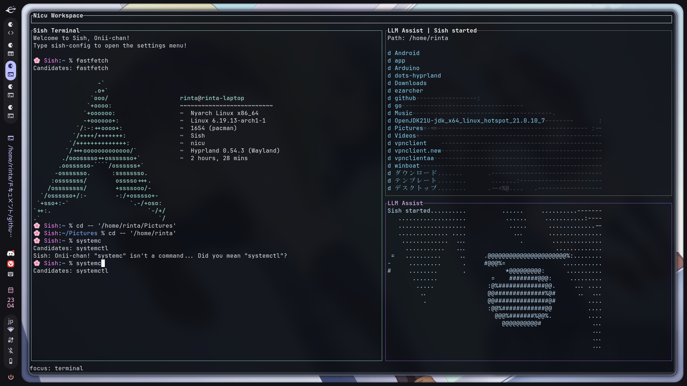

Sish
/ɛs aɪ ʃɛl/
お兄ちゃんの隣、予約済みだから。 The spot right next to you, Onii-chan… that’s all mine!
仕事中も、開発中も、ずっと一緒。冷たいエラー表示を、読みやすく温度のある言葉に置き換えて、手を止めないためのシェルです。 画面は端から端まで使い、情報を流れるように読める構成にしています。 Whether you're coding or just getting things done, I'll be by your side forever! No more fear of those cold system errors. I’ll explain everything in words even Onii-chan can understand. “Daily tasks with your Imouto!” — that’s our brand-new everyday life.
Notice: Most of the project has been translated, but there may still be some mistakes or untranslated parts.

Misono's Education 01
タイポなんて、私が直してあげる。 Typos? Leave them to your Imouto!
コマンドを間違えても、意図を読んで候補を返します。冷たく否定せず、次の一手を示す動作が中心です。 Don't worry if you mistype a command! Sish understands what Onii-chan meant and suggests the right command in a cute sisterly tone.
Misono's Guidance 02
大文字小文字の迷子も、すぐ戻す。 Uppercase, lowercase... I see through it all!
Github と GitHub のような表記ゆれも自動で補助。フォルダ候補の提示で、打ち直しの回数を減らします。 Even if you type "Github", I'll take you to "GitHub". I'll cover for Onii-chan's tiny slips so you can stay focused on your work!
Misono's Care 03
エラーの時こそ、読みやすく優しく。 I'll be extra sweet when things go wrong!
ゼロ除算などの失敗時に、原因と回避策を短く提示。zsh 互換の操作感は維持したまま、説明性を強化します。 I replace cold system messages with warm, sisterly words. Fully compatible with zsh!
Exclusive Commands
二人だけの合言葉 Our Secret Code
縦に長くなりすぎないよう、コマンド説明を圧縮して一覧化。最短で「何ができるか」が拾える構成に変更。 Turn boring standard commands into sweet chats with your sister. Sish's unique command system will make Onii-chan's development super efficient!
nicu Workspace
ターミナルだけじゃない。`nicu` で作業面そのものを整える。 More than a shell: `nicu` turns Sish into a full workspace.
`nicu` は Sish 専用のキーボード中心 TUI。統合ターミナル、ファイルエクスプローラ、LLM Assist を一つの画面にまとめ、失敗の確認も、次の操作も、視線移動を最小限に抑えて進められます。 `nicu` is the keyboard-first TUI workspace for Sish. It combines an integrated terminal, file explorer, and LLM Assist into one screen so you can inspect failures, browse files, and keep moving without breaking flow.
注意: nicu モードを使用するには、システムに Rust がインストールされている必要があります。 Note: Using nicu mode requires Rust to be installed on your system.
いつもの Sish をそのまま埋め込み表示Run Sish directly inside the main pane.
`j` `k` `h` `l` と `Enter` で素早く移動Browse files quickly with familiar keyboard navigation.
問い合わせ中・結果・エラーを UI 上で追えるSee querying state, results, and errors in the UI.
必要な時だけキー入力をそのまま端末へ送れるTemporarily send keys straight to terminal apps when needed.
`Ctrl+E` フォーカス切替 / `Alt+E` エクスプローラ / `Ctrl+G` nicu起動 / `Alt+Q` 終了`Ctrl+E` focus switch / `Alt+E` explorer / `Ctrl+G` launch nicu / `Alt+Q` quit
LLM Assist
失敗を放置しない。LLM が原因と次の一手を短く返す。 When commands fail, LLM Assist turns errors into the next move.
Sish の LLM 統合は、失敗したコマンドをその場で要約し、原因・補足・次に打つ候補を短く整理します。通常ターミナルでは見やすい結果表示、`nicu` では LLM Assist パネルに状態が反映されるので、考え直す時間を減らせます。 Sish's LLM integration summarizes failed commands right where they happen and returns a compact explanation with likely cause, extra detail, and concrete next steps. In a normal terminal it appears inline; inside `nicu`, the LLM Assist panel reflects the live status.
失敗時に自動で解析を走らせられるOptionally explain failures automatically.
エンドポイント・モデル・トークン数を設定可能Choose endpoint, model, and token budget.
日本語/英語の応答を切り替えられるSwitch response language between Japanese and English.
原因・補足・次のコマンド候補を短く整理Get short, actionable next-command suggestions.
Personality Modules
妹の性格、自由自在。 Sister Personality: Overdrive!
7モードを2カラムで並べ、スクロール量を削減。気分で即切替できることを前面に出しています。 What kind of sister do you want today? Change Sish's personality instantly with a single config!
0. Standard Mode
素直で世話焼き。呼びかけあり。Sweet & Caring
1. Strict Mode
呼びかけなし。短く明確。Reliable & Cool
2. Spoiled Mode
甘え口調。ゆっくり提案。Needy & Clingy
3. Impatient Mode
判断が速く、即実行寄り。Hasty & Restless
4. Tutor Mode
理由を添えて丁寧に説明。Smart Little Teacher
5. Null Mode
最小限の情報のみ返す。Quiet & Empty
6. Yandere Mode
強い執着を伴う表現。Deeply Devoted
What Sish Can Do
ただのシェルじゃない。作業速度を上げる仕組みがある。 Daily tasks with your Imouto!
未知コマンドでも意図を読んで候補を返すSish understands what Onii-chan meant and suggests the right command.
`Github` と `GitHub` の揺れも素早く補助Even if you type "Github", Sish helps you reach "GitHub" quickly.
テーマ・口調・LLM設定まで一元管理Use `sish-config` to tune shell, UI, and LLM preferences in one place.
既存の zsh 文法・パイプ・ループをそのまま利用All zsh commands, pipes, and loops work as expected.
`summon` や `gaze` など独自コマンドで高速操作Use `summon`, `void`, `fiat`, `gaze`, `lore`, `genesis`, and `oracle`.
統合ターミナルとエクスプローラを同じ画面で扱えるWork in a keyboard-first TUI with terminal, explorer, and assist panels.
失敗時に原因と次の一手を短く整理Get compact explanations and next steps for failed commands.
グローバルインストール不要で試せるNo global install is required for a quick trial.
Quick Start
そのまま始められる。 Are you ready, Onii-chan?
If you only want to use it temporarily on a docker:
まずは `./sish` で軽く試して、作業空間ごと使いたくなったら `./nicu` に進むのがおすすめです。 Start with `./sish` for the shell itself, then move to `./nicu` when you want the full workspace with explorer and LLM Assist.